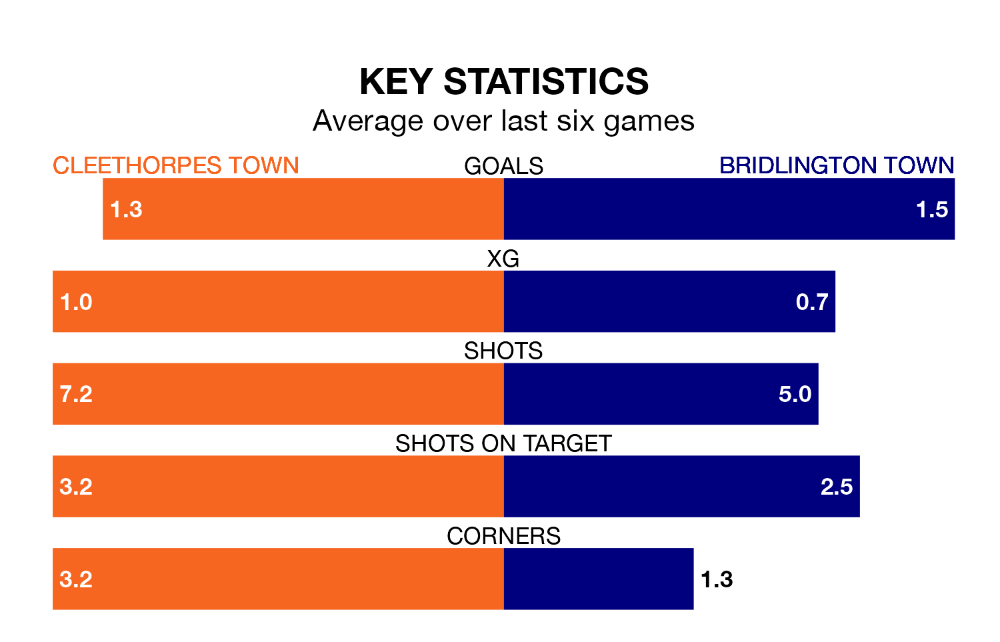

Bridlington Town travel to Cleethorpes Town on Saturday in the Northern Premier League Division One East.
The visitors come into the game on the back of a draw in their last match, having tied with Grantham Town 2-2 at home.
Cleethorpes, meanwhile, lost their last match, 3-1 against Consett.
Cleethorpes are in mixed form in the Northern Premier League Division One East, with two wins and two draws from their last six games.
With a win and two draws over that period, Bridlington's form is worse – they have taken five points from 18, compared to Cleethorpes Town's eight.
With 31 goals in 23 games so far this season, the home team are scoring at below the league average rate with 1.3 goals per game. But they are conceding fewer than average too, letting in 28 goals at a rate of 1.2 per game.
Bridlington Town are also below average scorers, with 1.4 goals per game, compared to a league average of 1.6. They have conceded 1.6 goals per game.
In the last five years, Cleethorpes and Bridlington have played each other on five occasions. Cleethorpes won all of them.
On average, Cleethorpes scored 2.0 goals and Bridlington 0.6 in those matches.
Their last meeting was on September 23, when Cleethorpes won 3-2 away.
The visitors are 13th in the table after 25 games, of which they have won eight and drawn five, earning 29 points.
Cleethorpes are one place ahead of Bridlington in 12th, with seven wins and eight draws putting them on the same number of points.
Updated: 10:03 (UTC), 30/01/24